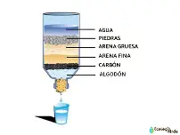

Un purificador de agua casero es un dispositivo elaborado con materiales simples que permite filtrar impurezas y mejorar la calidad del agua. Es ideal para proyectos escolares y demostraciones de sostenibilidad.

Representación visual del filtro con sus capas de algodón, carbón activado, arena y grava.